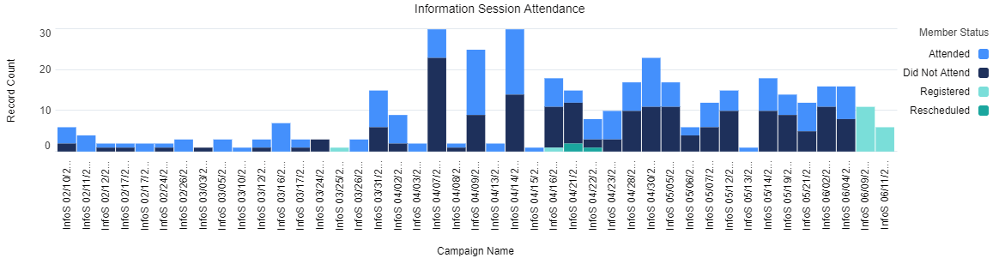
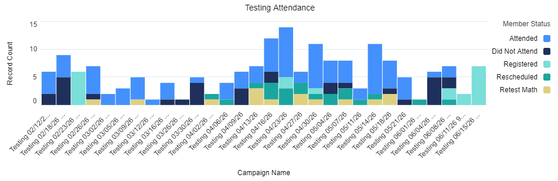

My Contributions
Outreach: Tabling & Flyering
I've tabled at 6 locations, and I've delivered flyers at 35 locations.
Information Sessions
I've led 42 information sessions.

I've led 34 virtual information sessions and eight in-person information sessions since February. I started out by shadowing my manager, Ariagnna Abreu-Garcia, the Community Outreach and Recruitment Specialist, and eventually was presenting sessions on my own.
Information sessions take place virtually on Zoom every Tuesday and Thursday, and in-person sessions take place every couple of weeks. I've presented at the Codman Branch of the Boston Public Library, along with the Hyde Park Branch. I also led the open-house info-session in our building in April.

Entrance Exam Proctoring
I've proctored 24 testing sessions.

All applicants for the Adult Career Training Programs are required to take Accuplacer entrance exams. I received certification to proctor these exams, and for each session I set up the testing room with all the technology and materials applicants need to take their exams. I present the instructions and help participants get started. I support them along the way, and I help them interpret their scores at the end of their exams.
I also suggested to the team that we provide additional resources for applicants to adequately prepare for their exams.
Entrance Exam Outcomes by City
I also analyzed the testing outcomes logged in Salesforce to identify correlation to cities our participants come from. I ran various reports in Salesforce to get the raw data, which I exported to Excel to create this bar graph. These results are from the exams I proctored.

The majority of our applicants are from Boston and Cambridge, which is to be expected. Some cities listed here are Boston neighborhoods, such as Dorchester and Roxbury, so the data has potential for cleanup. Creating a chart like this showcasing data amongst Boston neighborhoods may show further insight. It is difficult to identify clear, data-driven insights from this chart, but it is clear that there is room for more outreach in cities outside of Boston and Cambridge, and there is room for either targeting demographics more aligned with our ideal participants or expanding our support with entrance exam preparation so more people can successfully move through the application process.